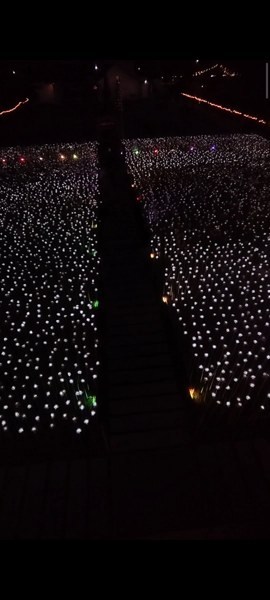
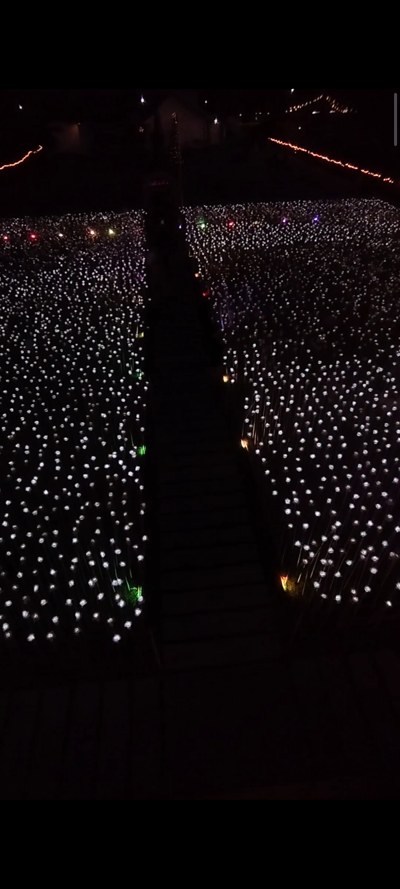

Tourist Spot Blog
1.RORO CENTENNIAL Road FOOD PARK Cordova

Description: Mga lami.an nga ihaw dre sa Cordova Centennial Road, tanang putahi nga ihaw naa dre.
- Unli Tuslob Buwa 150 plus free puso 10 pieces
- Sea Foods
- Pork
- TINULA
- Ug Uban pa
Blog By:Jess Francis Partusa
Click ReadMore to see my blog videoReadmore2. 10k Roses Cordova
 

Description:Ganahan kag lami.an nga view ? unsai pay ge huwat nimu anhe nas 10k roses. I rate this spot at 10/10 In Evning Disclaimer: ENTRANCE Fee 20 per head
- CHILLING
- Sea View
- FOODS
- 10K ROSES
- Ug Uban pa
Blog By:Jess Francis Partusa
Click ReadMore to see my blog videoReadMore3. Museum Cordova


Description:It is beautiful when your town keep the old things nga ge pang gamit pas atong mga katutobo , hantud karon makita pa gehapon nato. peru wa ko kbw unsai gamit adtong uban. kamo nalang tanaw.
- Karaang Galingan sa Mais
- Karaang Tahi.anan
- Karaang mga Kahoy
- mga Sinaunang Santos
- Ug Uban pa
Blog By:Jess Francis Partusa
Click ReadMore to see my blog videoReadmore4. Park Cordova


Description: Kani nga park gamay sya peru nindot ang design , nindot pagka design , nindot kaau sa mata. pwd ka dre and naa poi simbahan sa atbang kung ganahan ka mo simba. y kurat kai daplin rag Pulis Station
- Mag chill-chill
- Date with your love Ones
- Play with you child
- Listening wali Sa pare
- Ug Uban pa
Blog By:Jess Francis Partusa
Click ReadMore to see my blog videoReadmore5. Bantayan Beach Cordova


Description: Kung ganahan mo maligu nga nga lebre nga nindot ug balas ug nindot nga view ug tinaw nga dagat, unsa pai ge huwat nimu Anhe nas Bantayan
- Mag chill-chill
- Date with your love Ones
- Bounding with your family
- Stress relief
- Ug Uban pa
Blog By:Jess Francis Partusa
Click ReadMore to see my blog videoReadmore6. Lantaw The Floating Restaurant Cordova

Description: LANTAW Beside 10k Roses naa dre ang pinakalami.an nga mga putahing sea foods ug uban pang unsa imong trip neg sulod pa gane nimu naa dayun mo assist nimu kung naa naba kai table , and super adorable ang ilang mga foods.
- FOOD TRIP
- Date with your love Ones
- Bounding with your family
- Stress relief
- Ug Uban pa
Blog By:Jess Francis Partusa
Click ReadMore to see my blog videoReadmore